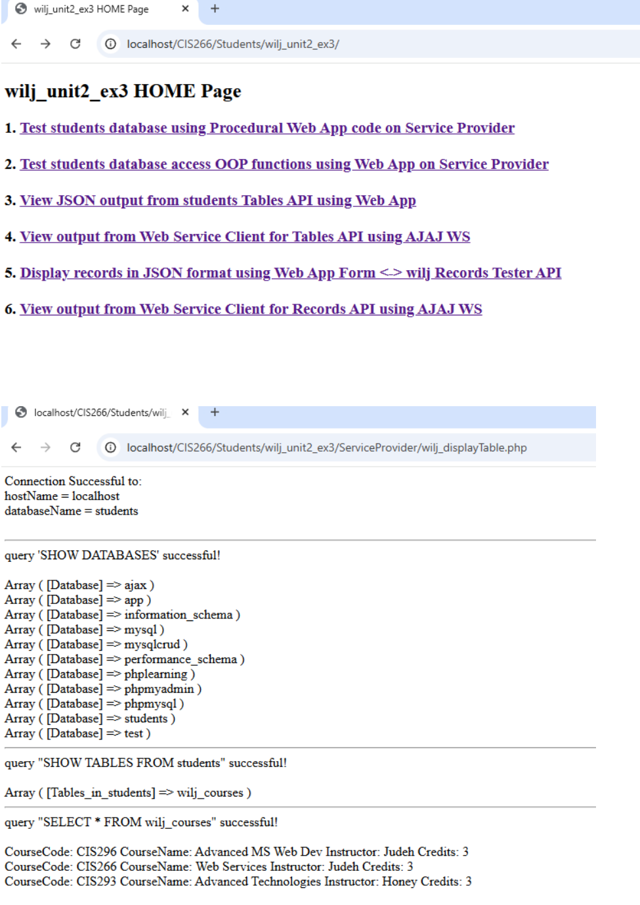
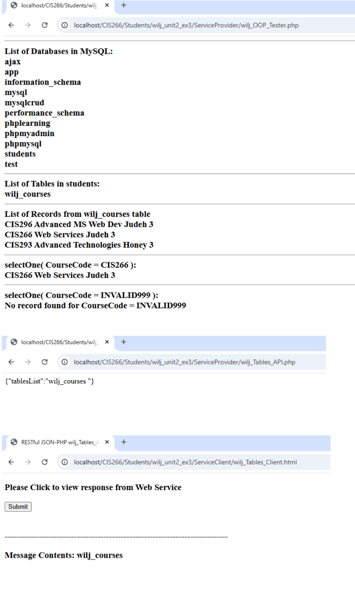
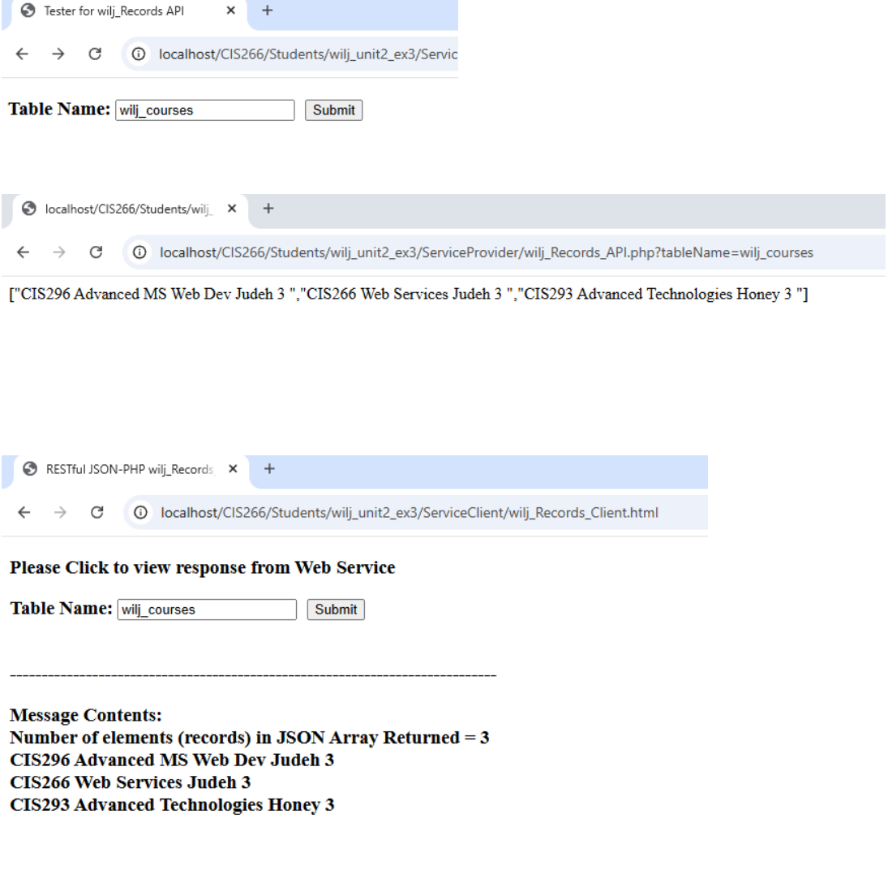
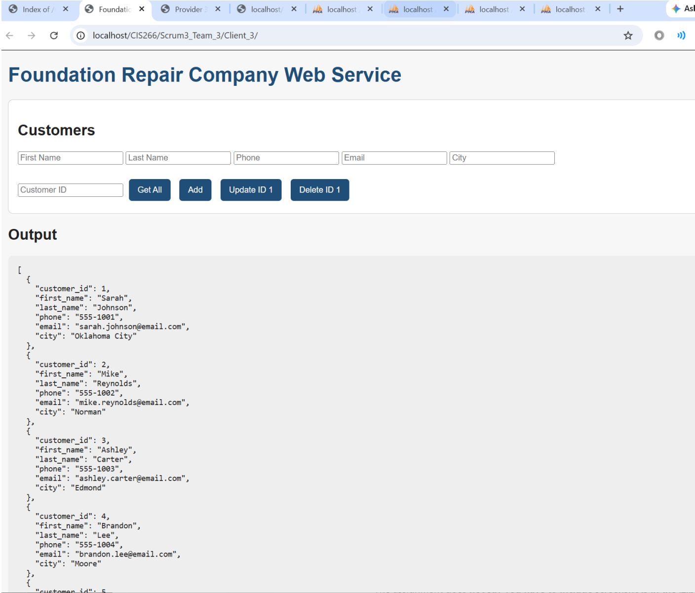
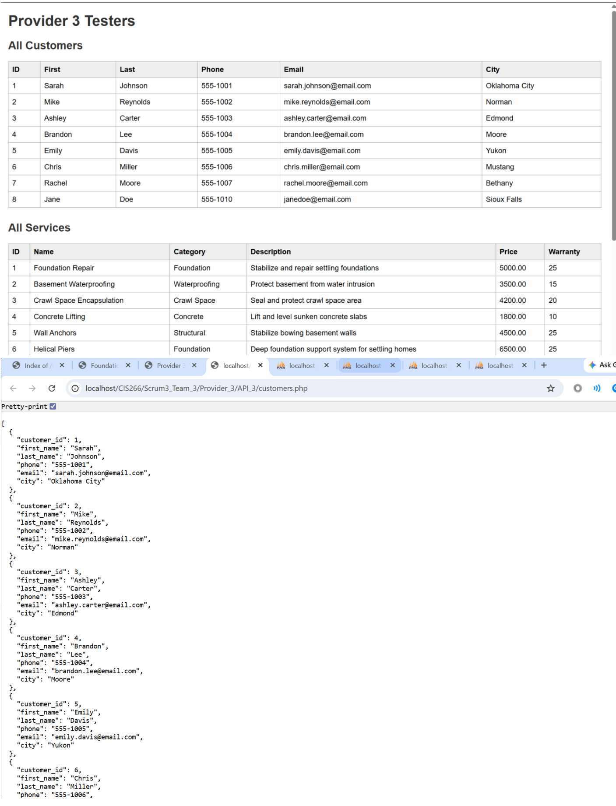
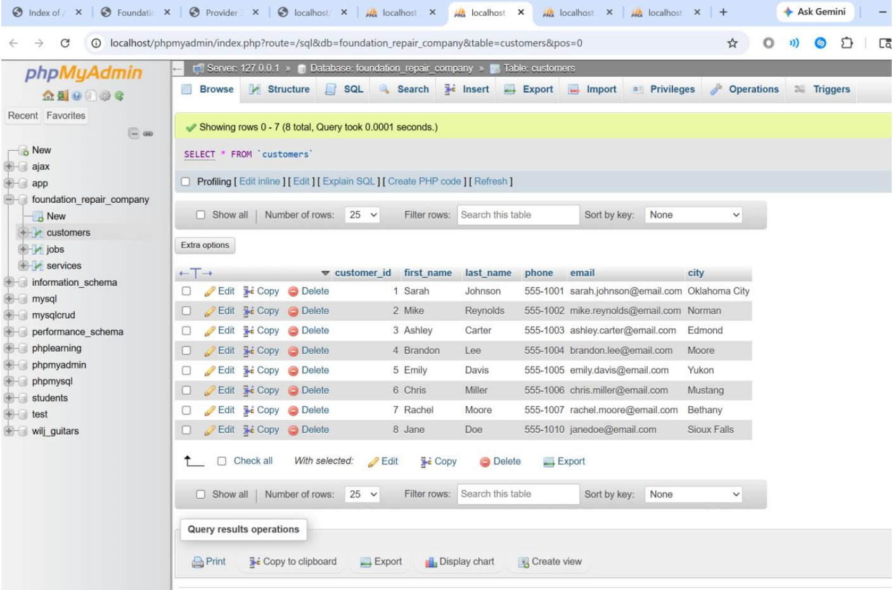
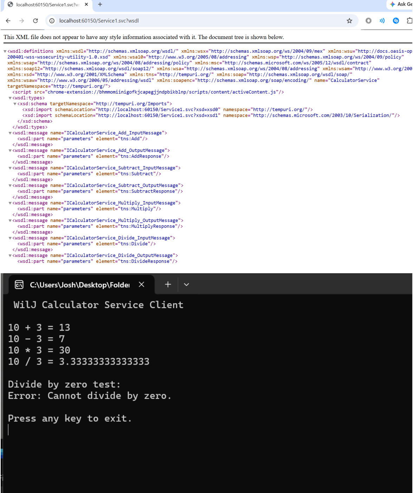
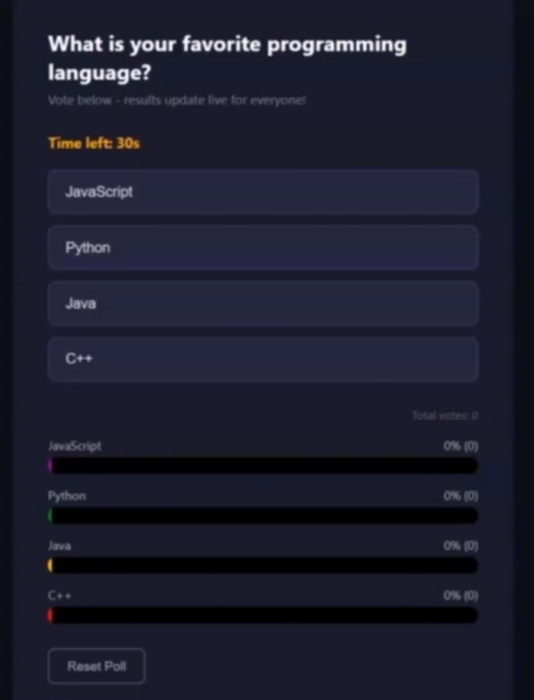
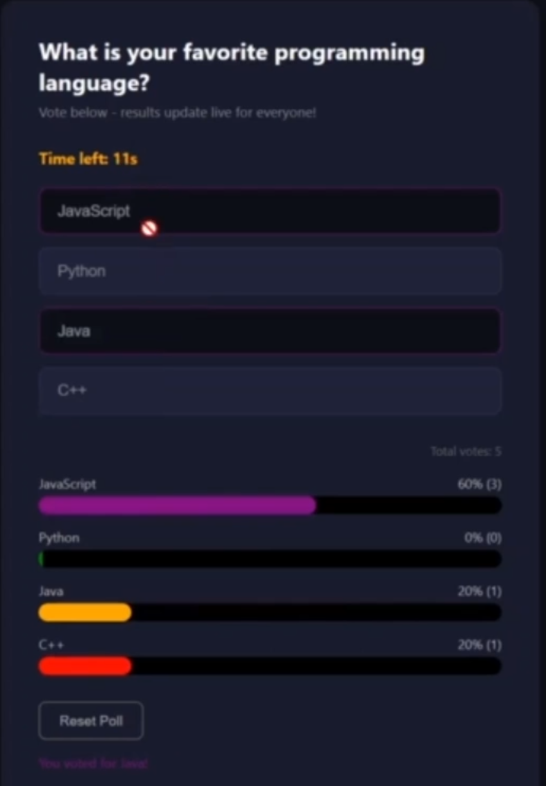
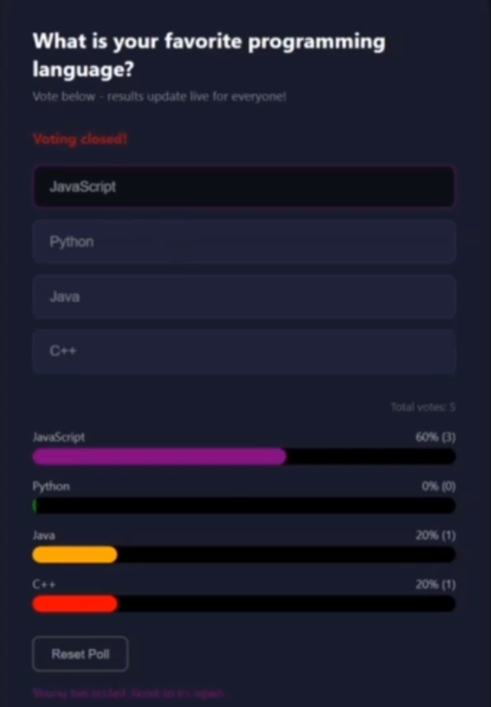

This page covers CIS 266 Web Services projects. The two dynamic projects include live working demos. The two static projects include documentation, screenshots, and for Scrum 4 presentation slides and demo videos.
Unit 2 - Lesson Plan 3 -AJAJ/PHP RESTful DB Web Service
This assignment had us building a RESTful web service using PHP and MySQL where the frontend communicates with the backend through asynchronous JavaScript instead of traditional form submissions. We converted an existing web app into a service provider and client structure, creating separate endpoints to retrieve a single record or all records from the database. The service included dedicated testers to verify that everything worked correctly and handled errors properly.



displayRecords($table);
$data = array();
while($row = $DB_Result->fetch_assoc()) {
$rValue = "";
foreach($row as $value) {
$rValue = $rValue . "$value ";
}
$data[] = $rValue;
}
print(json_encode($data));
?>
$('#target').submit(function(event) {
event.preventDefault();
var aTableName = $('#tableName').val();
$.ajax({
type: 'GET',
url: 'ServiceProvider/wilj_Records_API.php',
data: 'tableName=' + aTableName,
dataType: 'json',
encode: true
})
.done(function(data) {
var length = data.length;
var records = "Records returned: " + length + "
";
for (i = 0; i < length; i++) {
records += data[i] + "
";
}
$('#aMessage').html(records);
})
.fail(function() {
$('#aMessage').text('An error occurred. Please try again.');
});
});
Scrum 3 Team Project - CRUD RESTful Web Service
This project is a web application built for a foundation repair company that manages customers, jobs, and services. The app uses a PHP/MySQL backend with a fully functional RESTful API that supports all four CRUD operations - creating, reading, updating, and deleting records.



getCustomer($_GET['id']));
} else {
echo json_encode($customer->getAllCustomers());
}
break;
case 'POST':
$data = json_decode(file_get_contents("php://input"), true);
$result = $customer->insertCustomer(
$data['first_name'], $data['last_name'],
$data['phone'], $data['email'], $data['city']
);
echo json_encode(["success" => $result]);
break;
case 'PUT':
$data = json_decode(file_get_contents("php://input"), true);
$result = $customer->updateCustomer(
$data['customer_id'], $data['first_name'], $data['last_name'],
$data['phone'], $data['email'], $data['city']
);
echo json_encode(["success" => $result]);
break;
case 'DELETE':
parse_str($_SERVER['QUERY_STRING'], $params);
$result = $customer->deleteCustomer($params['id']);
echo json_encode(["success" => $result]);
break;
}
?>
Unit 3 - WCF Project
The WCF Calculator Service is a Windows Communication Foundation application that exposes four mathematical operations Add, Subtract, Multiply, and Divide as a SOAP-based web service. A separate C# console client connects to the service and calls each operation, including a dividing by zero error handling test.

[ServiceContract]
public interface ICalculatorService
{
[OperationContract]
double Add(double a, double b);
[OperationContract]
double Subtract(double a, double b);
[OperationContract]
double Multiply(double a, double b);
[OperationContract]
double Divide(double a, double b);
}
public class CalculatorService : ICalculatorService
{
public double Add(double a, double b) { return a + b; }
public double Subtract(double a, double b) { return a - b; }
public double Multiply(double a, double b) { return a * b; }
public double Divide(double a, double b)
{
if (b == 0)
throw new DivideByZeroException("Cannot divide by zero.");
return a / b;
}
}
CalculatorServiceClient client = new CalculatorServiceClient();
double a = 10;
double b = 3;
Console.WriteLine($"{a} + {b} = {client.Add(a, b)}");
Console.WriteLine($"{a} - {b} = {client.Subtract(a, b)}");
Console.WriteLine($"{a} * {b} = {client.Multiply(a, b)}");
Console.WriteLine($"{a} / {b} = {client.Divide(a, b)}");
client.Close();
Scrum 4 Team Project - Presentation - Demo Video
The Scrum 4 project is a real time live polling application that lets users vote on their favorite programming language. It uses Node.js and Socket.io on the backend so every vote instantly updates the results for all connected users without refreshing the page. The app includes animated progress bars, a thirty second countdown timer, and a reset function to restart the poll.
Team Members: Joshua Williams and Jenn Woldt



io.on('connection', (socket) => {
socket.emit('updateResults', votes);
socket.on('vote', (choice) => {
if (votes.hasOwnProperty(choice)) {
votes[choice]++;
io.emit('updateResults', votes);
}
});
socket.on('resetPoll', () => {
for (let key in votes) votes[key] = 0;
io.emit('updateResults', votes);
io.emit('pollReset');
});
});
function castVote(choice) {
if (hasVoted || !votingOpen) return;
socket.emit('vote', choice);
hasVoted = true;
document.querySelectorAll('.vote-btn').forEach(btn => {
btn.disabled = true;
if (btn.textContent.includes(choice)) btn.classList.add('voted');
});
setStatus(`You voted for ${choice}!`);
}
socket.on('updateResults', (votes) => {
const total = Object.values(votes).reduce((a, b) => a + b, 0);
options.forEach((opt, i) => {
const count = votes[opt] || 0;
const pct = total > 0 ? Math.round((count / total) * 100) : 0;
document.getElementById(`bar-${i}`).style.width = pct + '%';
document.getElementById(`pct-${i}`).textContent = `${pct}% (${count})`;
});
});